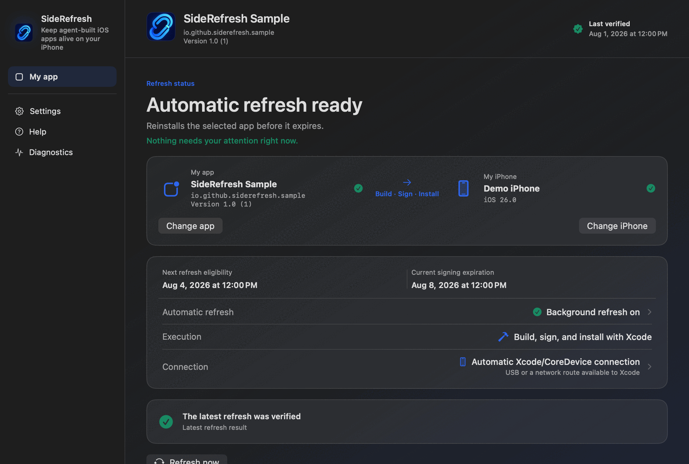

开源 · Mac + Xcode · 一个 App + 一台 iPhone
让编码智能体构建的 iOS App 持续运行在你自己的 iPhone 上。
SideRefresh 会从你拥有的 Xcode 项目中重新构建、签名并安装一个 App，在免费的 Personal Team 签名到期前完成刷新。源代码始终留在你的 Mac 上。
完成 Developer ID 签名、公证和发布验证后，将提供已签名的 Mac 构建版本。

Personal Team 签名周期
SideRefresh 根据经过验证的安装与签名到期证据安排下次刷新，而不是只看命令是否成功。
- 最近验证App 已安装从已安装的 App 读取签名到期时间
- 下次刷新到期前执行Mac 处于唤醒状态且 iPhone 可以连接时执行
- 签名到期最后期限必须重新构建、签名并安装 App 的时间
工作原理
在签名到期前，重复执行正常的 Xcode 安装流程。
选择自己的项目
选择一个你拥有的 Xcode 项目或工作区，以及已经配对的 iPhone。
构建、签名并安装
SideRefresh 使用已经安装的 Xcode 和免费的 Personal Team，不会收集 Apple Account 密码。
验证并安排刷新
记录已安装 App 的签名到期时间，并确定下一次安全刷新时间。
使用要求
需要真实的 Apple 开发环境。
- 安装了受支持 Xcode 版本的 Mac
- Apple Account 和免费的 Personal Team
- 你拥有的原生 iOS 项目
- 已开启开发者模式、完成配对且可以连接的 iPhone
- 在计划刷新时处于唤醒状态的 Mac
本地运行
项目始终留在你的 Mac 上。
- 不收集 Apple Account 密码
- 不上传源代码
- 不使用第三方 IPA 商店
- 使用 Apple 正常的 Xcode 签名和设备工具
- 采用 Apache-2.0 许可证、可供检查的源代码
首个版本范围
有意保持小范围。
SideRefresh 从一个个人 App 和一台 iPhone 开始。首个版本不用于安装他人的 IPA、管理团队或设备群、不支持脱离 Xcode 使用，也不承诺仅通过蜂窝网络完成刷新。
- 一个已选择的 App 和一台已选择的 iPhone
- USB 或 Xcode 已经可以使用的网络路径
- 实验性连接功能会被明确标注
产品页面：English · 한국어 · 日本語 · 简体中文
应用界面语言：英语、韩语